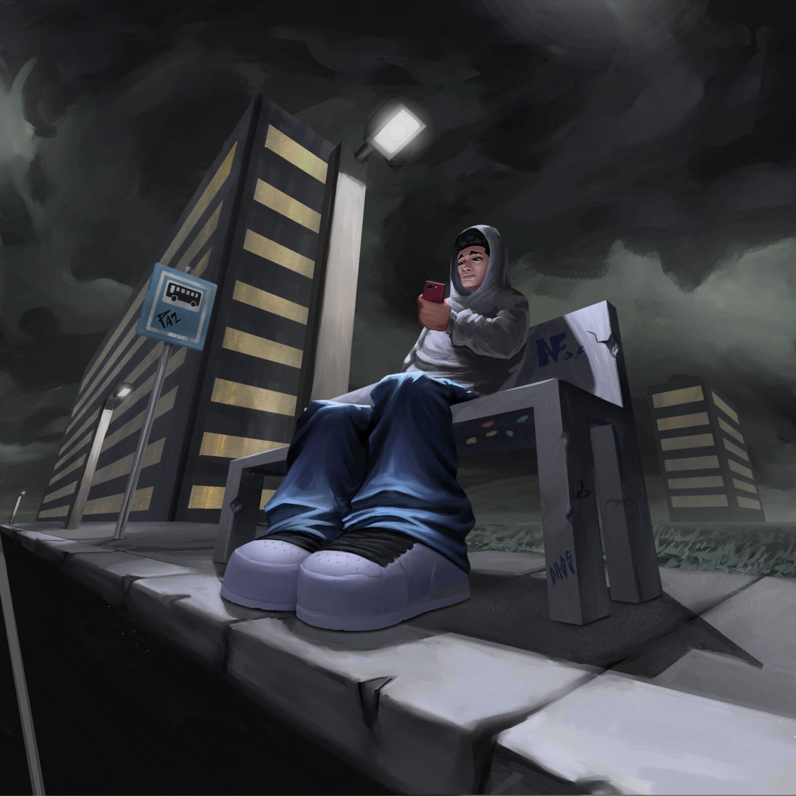

Artista visual · Brasil
Imagens para
ver de perto.
Um arquivo em construção de estudos, perspectivas e atmosferas criadas por Aquila.
Explorar trabalhos
Seleção
Trabalhos recentes
Cada imagem é uma pesquisa
em movimento.
Sobre o processo
Entre linhas precisas e acidentes de cor, procuro construir imagens que pedem uma segunda olhada.
Conversar sobre um projeto